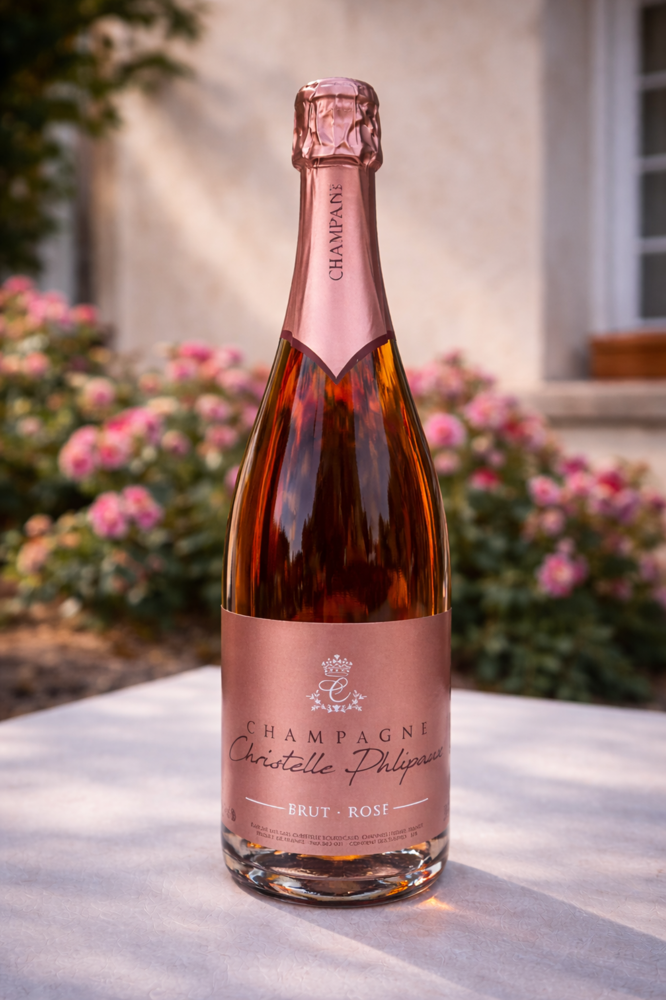

Propriété à Channes • Rosé d’assemblage
Commander Brut Rosé en direct
Le Brut Rosé apporte une expression plus fruitée à la gamme, avec une finale sèche qui lui permet de rester à table.
Pour offrir, ouvrir l’apéritif ou éclairer une table d’été.
StyleFruit rouge, finale sèche
À tableCadeau, apéritif, table d’été
ÉlaborationRosé d’assemblage • brut sec
Pinot Noir de la propriété
Un rosé d’assemblage élaboré pour garder du fruit et de la
fraîcheur.
